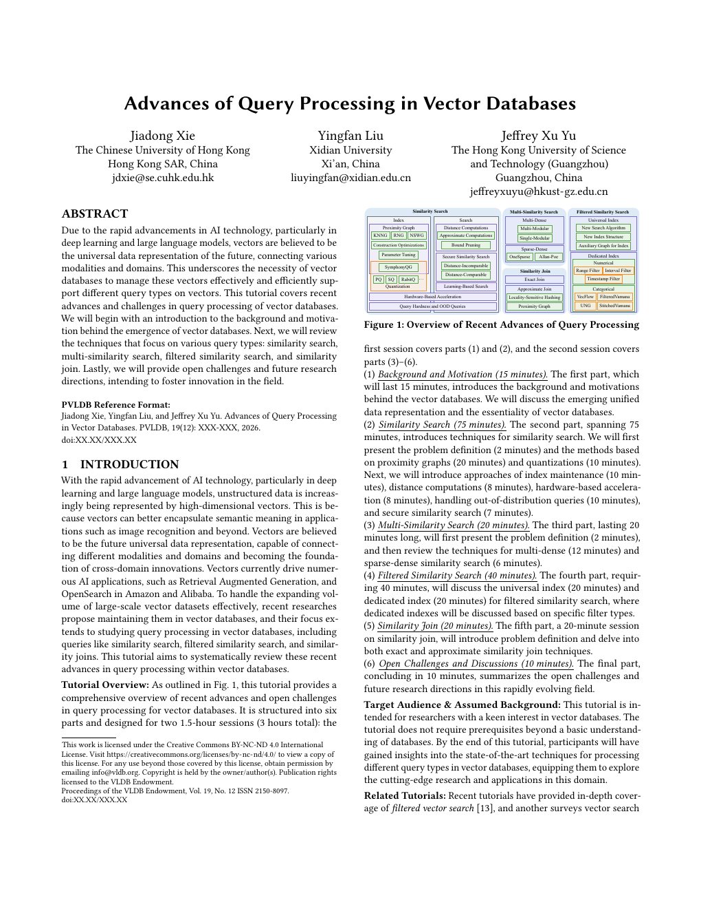

Background and Motivation
Universal vector representation and the essentiality of vector databases.
15 minA survey-style tutorial on query-processing algorithms, systems, and open challenges for modern vector databases.

Due to the rapid advancements in AI technology, particularly in deep learning and large language models, vectors are believed to be the universal data representation of the future, connecting various modalities and domains. This underscores the necessity of vector databases to manage these vectors effectively and efficiently support different query types on vectors. This tutorial covers recent advances and challenges in query processing of vector databases. We will begin with an introduction to the background and motivation behind the emergence of vector databases. Next, we will review the techniques that focus on various query types: similarity search, multi-similarity search, filtered similarity search, and similarity join. Lastly, we will provide open challenges and future research directions, intending to foster innovation in the field.
Designed as two 1.5-hour sessions, 3 hours in total.
Universal vector representation and the essentiality of vector databases.
15 minProximity graphs, quantization, maintenance, distance computation, hardware acceleration, OOD queries, and secure search.
75 minMulti-dense vector search and dense-sparse combined similarity search.
20 minUniversal and dedicated indexes for categorical, numerical, range, interval, and timestamp filters.
40 minExact and approximate similarity join techniques for high-dimensional vectors.
20 minBridging guarantees and practicality; toward unified query processing in vector databases.
10 minThe Chinese University of Hong Kong
Jiadong Xie is a PhD candidate in the Department of Systems Engineering and Engineering Management, The Chinese University of Hong Kong. His research interests are mainly vector databases and graph algorithms.
Homepage →Xidian University
Yingfan Liu is a tenured Associate Professor in the School of Computer Science and Technology at Xidian University. His research interests include vector databases and high-performance computing.
Homepage →HKUST (Guangzhou)
Jeffrey Xu Yu is a Professor and Acting Head of Data Science and Analytics Thrust at The Hong Kong University of Science and Technology (Guangzhou). His current research interests include vector databases, graph algorithms and systems, graph neural networks, query processing, and optimization.
Homepage →Embedded preview of the local tutorial proposal PDF.
@article{xie2026advances,
title = {Advances of Query Processing in Vector Databases},
author = {Xie, Jiadong and Liu, Yingfan and Yu, Jeffrey Xu},
journal = {Proceedings of the VLDB Endowment},
volume = {19},
number = {12},
pages = {XXX--XXX},
year = {2026},
doi = {XX.XX/XXX.XX}
}@misc{xie2026survey,
title = {A Survey on Query Processing in Vector Databases},
author = {Xie, Jiadong and Liu, Yingfan and Yu, Jeffrey Xu},
year = {2026},
howpublished = {\url{https://xiejiadong.github.io/files/paper/vector_survey.pdf}},
note = {Survey manuscript}
}Note: VLDB pages and DOI are left as placeholders until the official proceedings metadata is available.